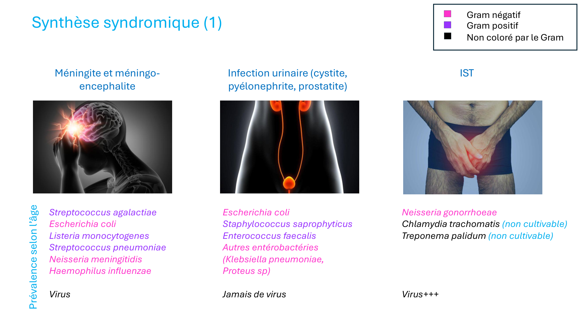
Étiopathogénie variable selon l'âge du patient — axe fondamental à retenir.
| Bactérie | Gram | Commentaire |
|---|---|---|
| Streptococcus agalactiae (streptocoque B) | G+ | Nouveau-né (contamination maternelle per partum) |
| Escherichia coli | G− | Nouveau-né, vieillard |
| Listeria monocytogenes | Non coloré typiquement | Bacille intracellulaire ; sujet âgé, immunodéprimé, femme enceinte. Résistant aux céphalosporines. |
| Streptococcus pneumoniae (pneumocoque) | G+ | Toutes tranches d'âge ; le plus fréquent chez l'adulte |
| Neisseria meningitidis (méningocoque) | G− | Enfant, adolescent ; purpura fulminans = urgence absolue |
| Haemophilus influenzae | G− | Enfant non vacciné, adulte immunodéprimé |
Virus : toujours possibles (HSV, entérovirus...) — mais méningite bactérienne = urgence thérapeutique.
JAMAIS de virus dans les infections urinaires bactériennes — règle absolue.
| Bactérie | Gram | Commentaire |
|---|---|---|
| Escherichia coli | G− | 80 % des IU communautaires — cause principale |
| Staphylococcus saprophyticus | G+ | Femme jeune (cystite simple), 2e cause communautaire |
| Enterococcus faecalis | G+ | Entérocoque, IU compliquées, post-chirurgical |
| Autres entérobactéries (Klebsiella pneumoniae, Proteus sp…) | G− | Contexte hospitalier, IU compliquées, porteurs de sonde |
Virus+++ très fréquents dans les IST (HSV, HPV, VIH, Hépatites). Les bactéries ci-dessous sont les agents bactériens à connaître.
| Bactérie | Gram | Particularité |
|---|---|---|
| Neisseria gonorrhoeae (gonocoque) | G− | Diplocoque intracellulaire ; culture + examen direct ; résistances aux FQ croissantes |
| Chlamydia trachomatis | Non cultivable | Parasite intracellulaire obligatoire ; PCR+++ (seul outil) ; asymptomatique fréquent chez la femme |
| Treponema pallidum (syphilis) | Non cultivable | Spirochète ; sérologie (TPHA/VDRL) ; chancre indolore = signe d'appel primaire |
IST = déclaration obligatoire (gonococcie, syphilis). Dépistage des partenaires systématique.
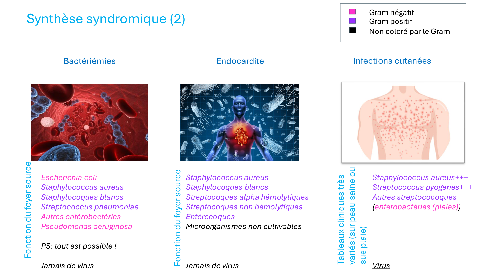
JAMAIS de virus — par définition, bactériémie = bactérie dans le sang.
L'agent bactérien dépend du foyer source. Retenir la règle « PS : tout est possible ! ».
| Bactérie | Gram | Foyer source typique |
|---|---|---|
| Escherichia coli | G− | Urinaire (urosepsis), biliaire, digestif |
| Staphylococcus aureus | G+ | Cutané, cathéter vasculaire, ostéo-articulaire |
| Staphylocoques blancs (S. epidermidis…) | G+ | Cathéter, prothèse (SCN coagulase-négatif) |
| Streptococcus pneumoniae | G+ | Pulmonaire, méningite, sinusite |
| Autres entérobactéries | G− | Digestif, urinaire, biliaire |
| Pseudomonas aeruginosa | G− | Nosocomial, immunodéprimé, mucoviscidose |
Hémocultures : prélever avant tout ATB → 2 paires minimum → résultat positif = confirmé subculture + tests complémentaires rapides.
JAMAIS de virus dans l'endocardite bactérienne.
| Bactérie | Gram | Contexte |
|---|---|---|
| Staphylococcus aureus | G+ | Porte d'entrée cutanée, cathéter, toxicomanie IV — endocardite aiguë grave |
| Staphylocoques blancs (SCN) | G+ | Prothèse valvulaire, immunodéprimé |
| Streptocoques alpha-hémolytiques (S. viridans) | G+ | Flore orale, valvulopathie — endocardite subaiguë (Osler) |
| Streptocoques non hémolytiques | G+ | Flore digestive/oro-pharyngée |
| Entérocoques | G+ | Sujet âgé, geste uro-digestif, résistance pénicilline possible |
| Microorganismes non cultivables (groupe HACEK, Coxiella burnetti…) | Variable | Endocardite à hémocultures négatives — PCR, sérologie |
Hémocultures : prélever avant ATB → si positif : subcultiver + PCR + sérologies si germe non cultivable.
Tableaux cliniques très variés selon terrain (peau saine, plaie traumatique, chirurgicale, diabète...). Virus possibles.
| Bactérie | Gram | Contexte/tableau |
|---|---|---|
| Staphylococcus aureus +++ | G+ | Furoncle, impétigo bulleux, folliculite, fasciite nécrosante, TSS |
| Streptococcus pyogenes (streptocoque A) +++ | G+ | Érysipèle, impétigo croûteux, fasciite nécrosante |
| Entérobactéries | G− | Plaies traumatiques/chirurgicales souillées, escarres, ulcères |
Culture + ATBgramme ± examen microscopique. Nécroses : cultures anaérobies indispensables.
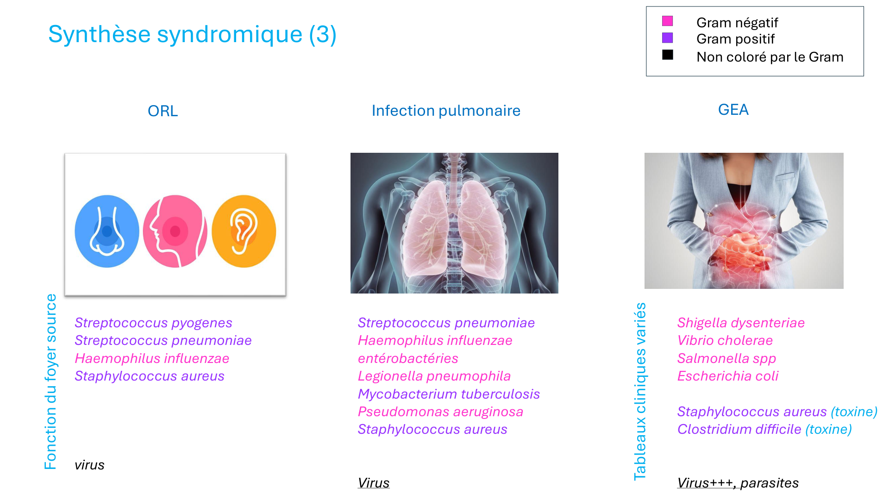
Virus+++ en fréquence (rhinovirus, adénovirus...). Les bactéries ci-dessous causent des complications bactériennes à ne pas manquer.
| Bactérie | Gram | Tableau |
|---|---|---|
| Streptococcus pyogenes (streptocoque A) | G+ | Angine bactérienne (TDR positif), otite, sinusite, phlegmon péri-amygdalien |
| Streptococcus pneumoniae | G+ | Otite moyenne aiguë (1re cause bactérienne), sinusite, mastoïdite |
| Haemophilus influenzae | G− | Otite, sinusite, épiglottite (enfant non vacciné) |
| Staphylococcus aureus | G+ | Complications post-chirurgie ORL, sinusite chronique |
TDR streptocoque A pour angine. Culture + ATBgramme ± examen microscopique si prélèvement indiqué.
Virus fréquents (grippe, Covid, VRS...). Pneumonies bactériennes potentiellement sévères — identifier l'agent guide l'antibiothérapie.
| Bactérie | Gram | Tableau / Contexte |
|---|---|---|
| Streptococcus pneumoniae | G+ | PAC classique : début brutal, fièvre, frissons, condensation lobaire |
| Haemophilus influenzae | G− | BPCO exacerbée, surinfection bronchite chronique |
| Entérobactéries (Klebsiella…) | G− | Pneumonie hospitalière, immunodéprimé, terrain éthylique |
| Legionella pneumophila | Non coloré (G− atypique) | Légionellose : pneumonie atypique sévère, hydroaérosols, Ag urinaire Legionella |
| Mycobacterium tuberculosis | Acido-alcoolo-résistant | Tuberculose : contage, IDR/IGRA, BAAR + culture Lowenstein (3-8 sem) |
| Pseudomonas aeruginosa | G− | PAVM, mucoviscidose, immunodéprimé profond |
| Staphylococcus aureus | G+ | Post-grippal, pneumonie abcédée, PAVM |
Examen microscopique + culture + ATBgramme ± antigène urinaire (Legionella, pneumocoque) ± PCR ± culture spécialisée (BK).
Virus+++ et parasites = causes les plus fréquentes de GEA en France. Les bactéries ci-dessous sont identifiables et certaines à déclaration obligatoire.
| Bactérie | Gram | Mécanisme / tableau |
|---|---|---|
| Shigella dysenteriae | G− | Dysenterie bactérienne (rectorragies, glaires) — DO |
| Vibrio cholerae | G− | Choléra : diarrhée profuse aqueuse « eau de riz », déshydratation aiguë — DO |
| Salmonella spp (non typhi) | G− | Toxi-infection alimentaire collective (TIAC) — DO si TIAC |
| Escherichia coli (STEC, ETEC, EPEC…) | G− | Tourista (ETEC), SHU (STEC : E. coli O157:H7) |
| Staphylococcus aureus (toxine) | G+ | Toxi-infection préformée : vomissements +++, début brutal (2-4h après repas), bref |
| Clostridioides difficile (toxine) | G+ | Colite post-antibiotique ; PCR/Ag toxine A&B sur selles |
PCR multiplex selles (culture standard ± culture spécialisée). Antigène spécifique (C. diff.). Parasitologie des selles si voyage tropical.
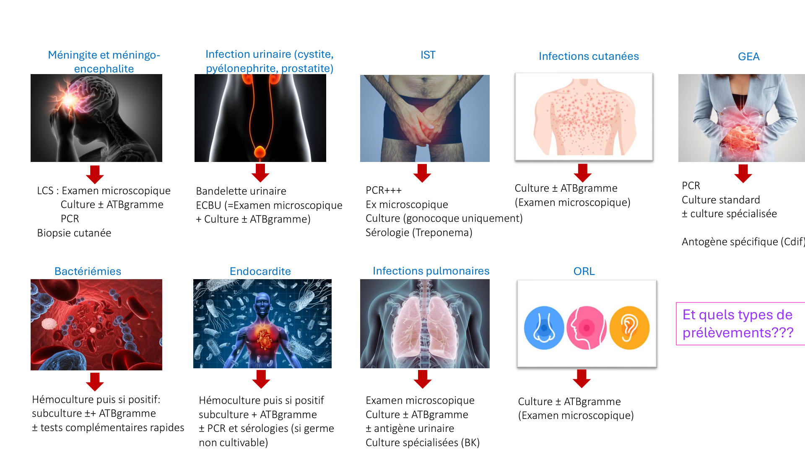
| Syndrome | Examens clés | Points particuliers |
|---|---|---|
| Méningite / méningo-encéphalite | LCS : examen microscopique + culture + ATBgramme PCR Biopsie cutanée (purpura) |
PL avant ATB si possible ; ne PAS retarder si purpura. Hémocultures simultanées. |
| Infection urinaire | Bandelette urinaire → si + : ECBU (examen microscopique + culture + ATBgramme) | Bandelette négative = diagnostic différentiel. Cystite simple : ECBU non obligatoire avant traitement empirique. |
| IST | PCR+++ (gonococcie : culture complémentaire) Sérologie (Treponema) |
Chlamydia = non cultivable → PCR seule. Gonocoque : culture importante pour ATBgramme. |
| Bactériémies | Hémocultures → si + : ATBgramme + tests complémentaires rapides | Hémocultures AVANT tout ATB. Identifier le foyer source = étape clé. |
| Endocardite | Hémocultures → si + : subcultiver PCR + sérologies (si germe non cultivable) |
Groupe HACEK, Coxiella burnetti = hémocultures négatives → sérologies spécialisées. |
| Infections pulmonaires | Examen microscopique + ATBgramme ± Ag urinaire (Legionella, pneumocoque) Culture spécialisée (BK) |
Qualité du prélèvement +++ (crachat vs LBA vs BW). BAAR si suspicion tuberculose. |
| ORL | Culture + ATBgramme ± examen microscopique | Angine : TDR streptocoque A. Otite enfant sans complication : sans prélèvement d'emblée. |
| Infections cutanées | Culture + ATBgramme (examen microscopique) | Toujours prélever avant antibiothérapie. Nécroses : cultures anaérobies. |
| GEA | PCR (multiplex selles) Culture standard ± spécialisée Antigène spécifique (C. difficile) |
Parasitologie si voyage. PCR/Ag toxine C. diff. si post-antibiotique. TIAC = DO. |
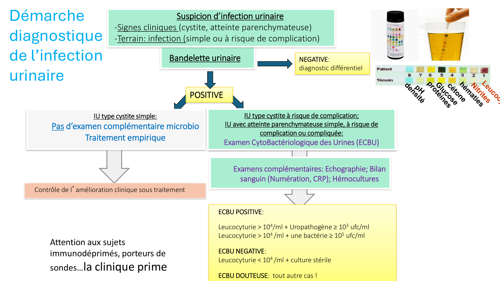
| Forme clinique | Leucocyturie | Bactériurie |
|---|---|---|
| Cystite / IU basse | > 10⁴/mL | Uropathogène ≥ 10³ ufc/mL |
| Atteinte parenchymateuse (PNA / prostatite) | > 10⁴/mL | ≥ 1 bactérie ≥ 10⁵ ufc/mL |
| Culture stérile | Leucocyturie < 10⁴/mL | — |
| ECBU douteuse | Tout autre cas → répéter si doute clinique | |
Attention immunodéprimés, porteurs de sondes : la clinique prime — les seuils classiques peuvent être ininterprétables (faux bactériuries asymptomatiques fréquentes).
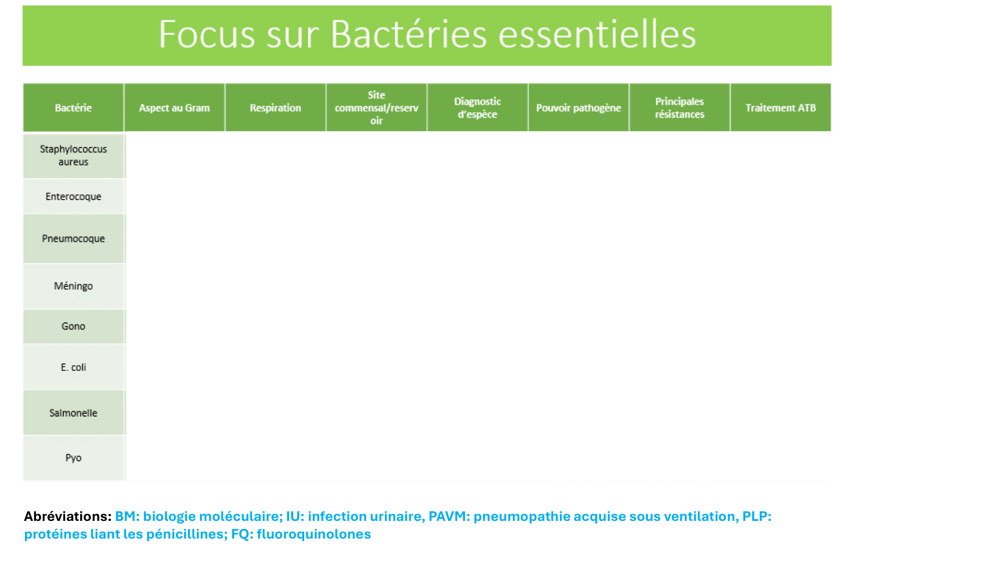
| Bactérie | Gram / Morpho | Respiration | Site commensal / Réservoir | Diagnostic d'espèce | Pouvoir pathogène | Résistances | ATB |
|---|---|---|---|---|---|---|---|
| Staphylococcus aureus | G+ cocci en grappes | Aéro-anaérobie facultatif | Peau, fosses nasales, périnée | Coagulase +, catalase +, culture standard, MALDI-TOF | Cutané +++, bactériémie, endocardite, pneumonie, ostéo-articulaire, TSS (toxine TSST-1) | SARM : résistance méticilline (PLP2a, gène mecA) ; résistances FQ, BORSA | Méticilline/oxacilline (SASM) ; Vancomycine/daptomycine/linézolide (SARM) |
| Entérocoque (E. faecalis / E. faecium) | G+ cocci en paires/chaînettes | Aéro-anaérobie facultatif | Tube digestif, périnée | Culture standard, tests biochimiques, MALDI-TOF | IU compliquée, endocardite, bactériémie | Résistance naturelle C3G et aminosides (bas niveau) ; ERV (glycopeptides) | Amoxicilline (E. faecalis) ; Vancomycine (ERV : alternatives linézolide) |
| Pneumocoque (S. pneumoniae) | G+ diplocoques lancéolés | Anaérotolérant | Nasopharynx | Culture sang/LCR, Ag urinaire, PCR, MALDI-TOF ; optochine sensible | Méningite, PAC, OMA, bactériémie, sinusite | PSDP (modification PLP) ; résistances macrolides fréquentes | Amoxicilline haute dose (PSDP) ; C3G IV (méningite) ; vancomycine si résistance |
| Méningocoque (N. meningitidis) | G− diplocoques en grain de café | Aérobe strict | Nasopharynx (portage sain 5-15%) | Culture LCS/sang, PCR, Ag latex ; examen direct LCS | Méningite purulente, purpura fulminans, septicémie | Résistances pénicillines émergentes ; rares résistances C3G | Ceftriaxone/céfotaxime (C3G) IV d'emblée |
| Gonocoque (N. gonorrhoeae) | G− diplocoques intracellulaires | Aérobe strict, exigeant | Muqueuses génitales, anale, pharyngée | Examen direct + Culture milieu spécial + PCR | IST : urétrite, cervicite, salpingite, gonococcie disséminée | Résistances pénicillines, FQ étendues ; résistances C3G émergentes (alerte OMS) | Ceftriaxone IM (dose unique) ; dépistage partenaires |
| Escherichia coli | G− bacille | Aéro-anaérobie facultatif | Tube digestif (commensal normal) | Culture standard, MALDI-TOF, ATBgramme, sérotypage (toxines PCR) | IU +++ (80%), bactériémie, méningite NN, GEA (STEC, ETEC…), PAVM | BLSE (résistance C3G), carbapénèmases ; résistances FQ, TMP-SMX fréquentes | Amoxicilline-clav, C3G, carbapénèmes selon ATBgramme |
| Salmonelle (Salmonella spp) | G− bacille | Aéro-anaérobie facultatif | Tube digestif animal (réservoir animal) ; transitoire chez l'homme | Coproculture + culture sang, sérotypage (Kauffmann-White), PCR | GEA (TIAC), fièvre typhoïde (S. typhi/Paratyphi — DO) | Résistances ampicilline, TMP-SMX ; résistances FQ émergentes | C3G ou FQ (si sensible) pour formes sévères/septicémiques |
| Pseudomonas aeruginosa | G− bacille | Aérobe strict | Environnement hydrique, cutanéo-muqueux | Culture standard, odeur caractéristique, pigment pyocyanique, ATBgramme +++ | Nosocomial +++, mucoviscidose, PAVM, bactériémie immunodéprimé | Résistances naturelles étendues (C1G, C2G, amoxicilline, TMP-SMX) ; acquises C3G, carbapénèmes, FQ | Pipéracilline-tazobactam, ceftazidime, imipénème ± aminoside (selon ATBgramme) |
| Erreur | Cause | Résultat |
|---|---|---|
| Faux positif | Contamination (microbiote) | Bactérie contaminante identifiée à tort comme pathogène |
| Faux négatif | Prise d'antibiotique préalable | « Culture négative » — inhibition de croissance |
| Faux négatif | Bactérie difficile/non cultivable | Pas de pousse sur milieu standard (Chlamydia, Treponema, Mycobactéries lentes…) |
| Faux négatif | Quantité trop faible d'échantillon | Sous-chargement → culture stérile |
| Faux négatif | Prélèvement inapproprié | Mauvais site, mauvais contenant, mauvaise conservation |
| Erreur | Cause |
|---|---|
| Faux positif | Contamination de l'échantillon |
| Faux négatif | Quantité trop faible ou prélèvement inapproprié (globalement mauvaise qualité d'échantillon) |
| Erreur | Cause |
|---|---|
| Faux positif | Spécificité des amorces insuffisante ; contamination du laboratoire ; inhibiteurs biologiques maitrisés |
| Faux négatif | Quantité trop faible, prélèvement inapproprié, inhibiteurs biologiques non maîtrisés |
| Erreur | Cause |
|---|---|
| Faux positif | Réaction croisée entre antigènes de différentes espèces |
| Faux négatif | Mauvais timing de prélèvement (fenêtre sérologique = anticorps pas encore produits = prélèvement inapproprié) |
Toujours associer 2 sérologies à 3-4 semaines d'intervalle pour objectiver une séroconversion (surtout si 1re sérologie négative en phase précoce).
| Erreur | Cause |
|---|---|
| Faux positif | Réaction croisée |
| Faux négatif | Quantité trop faible ou prélèvement inapproprié |
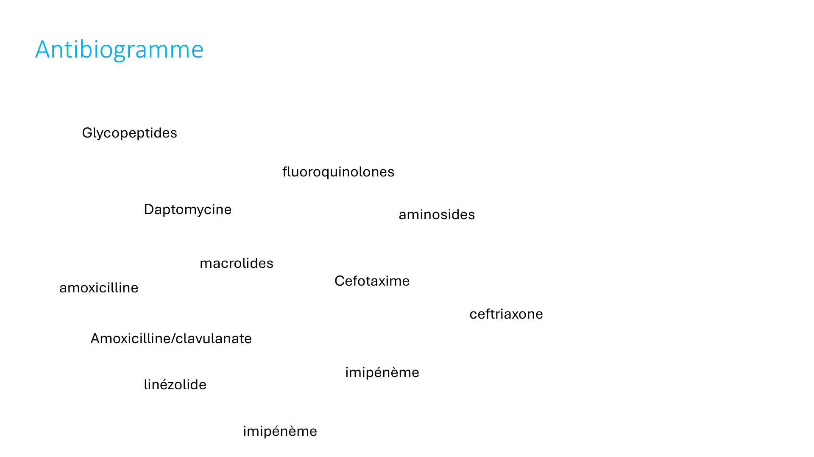
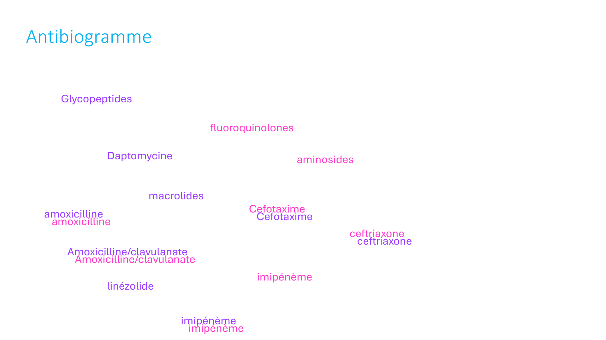
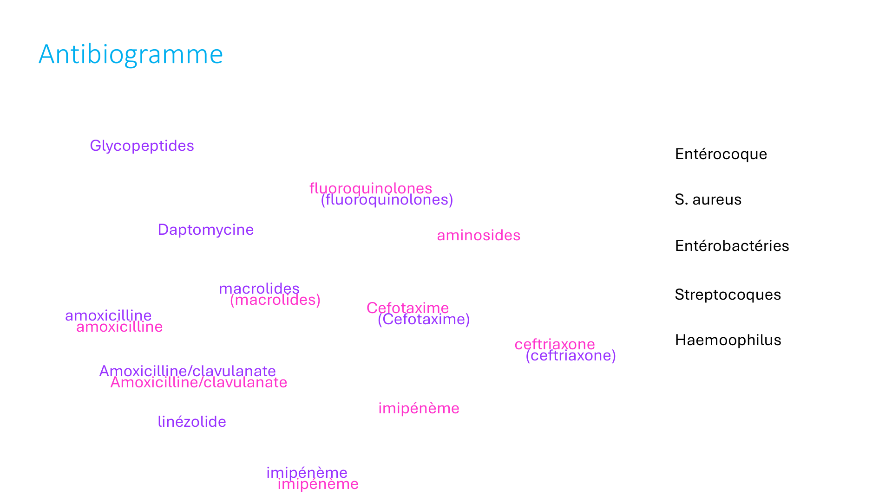
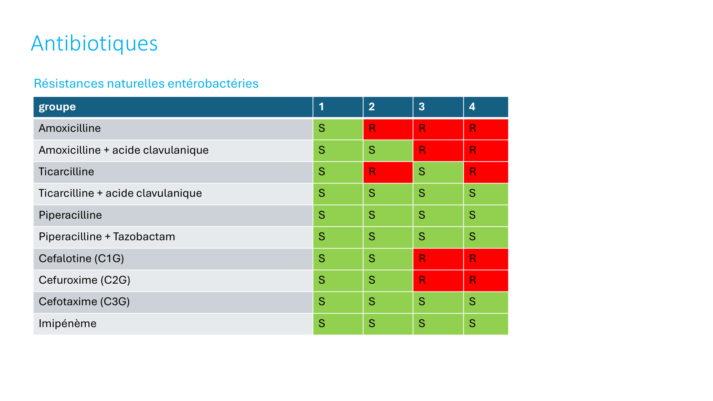
| Antibiotique | Groupe 1 | Groupe 2 | Groupe 3 | Groupe 4 |
|---|---|---|---|---|
| Amoxicilline | S | R | R | R |
| Amoxicilline + acide clavulanique | S | S | R | R |
| Ticarcilline | S | R | S | R |
| Ticarcilline + acide clavulanique | S | S | S | S |
| Pipéracilline | S | S | S | S |
| Pipéracilline + Tazobactam | S | S | S | S |
| Céfalotine (C1G) | S | S | R | R |
| Céfuroxime (C2G) | S | S | R | R |
| Céfotaxime (C3G) | S | S | S | S |
| Imipénème | S | S | S | S |
Les C3G et carbapénèmes couvrent tous les groupes en l'absence de résistances acquises (BLSE, carbapénèmases). En cas de groupe 3/4 : toujours ATBgramme avant de déescalader.
| Famille ATB | G+ | G− | Cibles / Pièges |
|---|---|---|---|
| Glycopeptides (vancomycine, teicoplanine) | OUI | NON (naturel) | SARM, entérocoque, SCN |
| Daptomycine | OUI | NON | SARM, ERV ; JAMAIS pour pneumonies (inactivé par surfactant pulmonaire) |
| Linézolide | OUI | NON | SARM, ERV |
| Macrolides | OUI | Partiel | Streptocoques, S. aureus, bactéries atypiques (Legionella, Chlamydia, Mycoplasma) |
| Fluoroquinolones (FQ) | Partiel | OUI | Entérobactéries, entérocoque, S. aureus, légionelle ; résistances fréquentes chez E. coli et gonocoque |
| Aminosides | Synergie seul | OUI | Synergie +++ G+ (associés aux glycopeptides), bons G− ; néphrotoxicité/ototoxicité |
| Amoxicilline | OUI | G1 seulement | Streptocoques, entérocoques, Listeria, H. influenzae (si sensible) |
| Amoxicilline/clavulanate | OUI | OUI (G1-3) | Inhibe béta-lactamases → étend spectre sur H. influenzae, E. coli, K. pneumoniae |
| Céfotaxime / Ceftriaxone (C3G) | OUI (sauf entérocoque, SARM) | OUI (G1-4) | Méningite (pneumocoque, méningocoque), bactériémies, endocardite |
| Imipénème (carbapénème) | OUI | OUI (tous) | Spectre maximal — réserver aux infections graves et BMR ; risque de sélection de résistances |
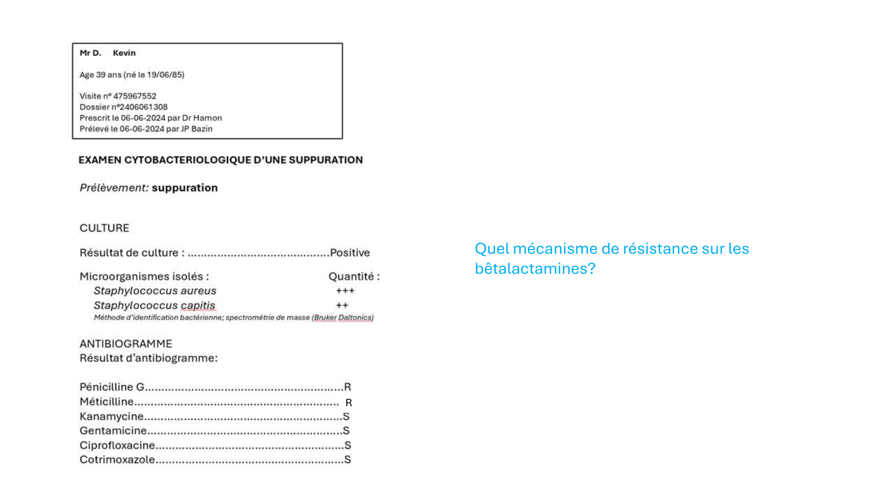
| Profil | Mécanisme | Gène | ATBgramme | Traitement |
|---|---|---|---|---|
| S. aureus méti-S (SASM) | Sensible ; seule résistance = pénicillinase (PenG) | blaZ | PenG = R, Méticilline = S | Oxacilline/méticilline |
| S. aureus méti-R (SARM) | PLP2a à faible affinité = résistance à TOUTES les bêta-lactamines | mecA (cassette SCCmec) | PenG = R, Méticilline = R, C3G = R | Vancomycine ou Daptomycine ou Linézolide |
| BORSA | Hyperproduction de pénicillinase → déborde la méticilline | Surexpression blaZ | PenG = R, Méticilline = R ou intermédiaire ; C3G peut rester S | Selon ATBgramme complet |
Clé SARM : la résistance à la méticilline entraîne une résistance à toutes les bêta-lactamines (pénicillines, céphalosporines, carbapénèmes) — seule exception : ceftaroline (C5G, AMM pour SARM).
Staphylococcus capitis isolé avec S. aureus → probablement contaminant cutané (flore normale) — ne pas traiter sauf endocardite sur prothèse ou bactériémie confirmée.